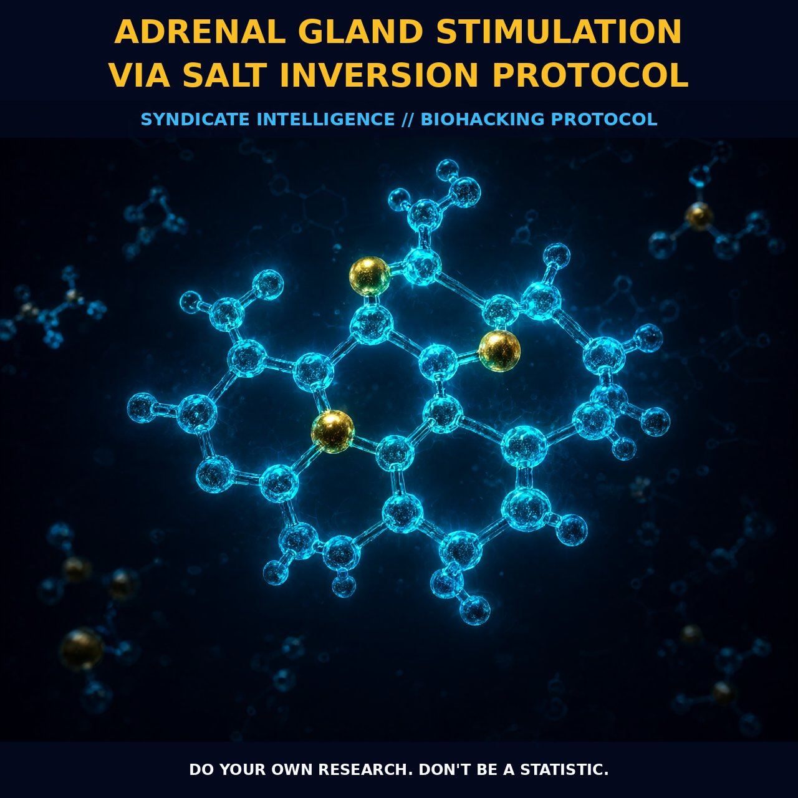

Adrenal Gland Stimulation via Salt Inversion Protocol

MECHANICS
The foundation of adrenal stimulation via salt inversion lies in the dynamic interplay between osmoregulation and the hypothalamus-pituitary-adrenal axis. Research indicates that short-term salt loading creates an osmotic stimulus that increases pituitary responsiveness to corticotropin-releasing hormone, effectively priming the system for action. This is not merely a passive hydration event but a active modulation of the HPA axis where sodium intake directly influences the secretion profile of adrenocorticotropic hormone and corticosterone. By manipulating salt levels in the bloodstream, we can shift the body from a state of basal maintenance to one of heightened readiness, particularly during the critical early morning hours when cortisol is essential for waking.
The inversion component introduces a mechanical variable that works in concert with this chemical signaling. Laying supine with legs elevated alters hemodynamics and circulation, creating a physiological environment that supports adrenal output. This position helps reduce the overall stress response by altering how the body perceives load, allowing the glands to function more efficiently without excessive sympathetic drive. The combination of osmotic pressure from salt and gravitational recalibration from inversion creates a synergistic effect that jump-starts endocrine activity before the day demands peak cognitive performance.
BIOLOGICAL LEVERAGE
Once the mechanical and chemical inputs are established, the biological leverage becomes evident in improved wakefulness and metabolic efficiency. Salt plays a specific role in aiding the adrenal glands to produce the cortisol required for waking up, which is vital in the early hours of the morning when the body transitions from sleep to activity. Simultaneously, the ingestion of water and salt acts as a mild diuretic, prompting the kidneys to flush out waste products that have accumulated in the body overnight. This dual action ensures that the endocrine system has the raw materials for hormone synthesis while the urinary system clears metabolic byproducts, reducing internal friction and preparing the organism for output.
The timing of this intake is crucial for maximizing receptor sensitivity and enzyme activity. Ingesting salt and water within fifteen to thirty minutes of waking capitalizes on the body's natural circadian rhythm, aligning exogenous support with endogenous peaks. This protocol supports the digestive system by balancing gastric acids, especially when paired with lemon juice, and provides a immediate substrate for nerve function and fat metabolism. By stabilizing these early processes, the body avoids the mid-morning crash often seen in those who rely solely on caffeine or do not adequately address their mineral status upon waking.
TACTICAL IMPLEMENTATION
To execute this protocol effectively, aim for half a teaspoon of table salt mixed with five hundred milliliters of water. Consume this mixture within fifteen minutes of waking to initiate the osmotic stimulation before it dissipates. Immediately following ingestion, adopt an inverted body position by lying on your back with your legs lifted up against a wall. Hold this posture for approximately eight minutes to allow the circulatory and endocrine systems to respond to the gravitational shift. This specific duration is sufficient to stimulate the adrenal glands without overtaxing the cardiovascular system, offering a practical window for bio-hacking your morning routine.
For those seeking additional modulation, consider stacking this protocol with other foundational nootropics that support energy and memory such as creatine or DHEA, which is naturally produced in the adrenal glands. While the salt inversion provides the acute trigger, longer-term strategies involve managing osmotic balance to prevent the blunted stress responses seen with prolonged salt loading. The goal is to find the sweet spot where short-term stimulation enhances pituitary response without crossing into the inhibitory phase associated with long-term adaptation. Monitor your subjective energy levels and adjust the salt quantity slightly if you notice excessive diuresis or tension, keeping the focus on steady, sustainable adrenal support throughout the day.
Do your own research. Don't be a statistic.
Prostar Life Hack
For those seeking additional modulation, consider stacking this protocol with other foundational nootropics that support energy and memory such as creatine or DHEA, which is naturally produced in the adrenal glands.
[ AUTHOR: LEAD TECHNICAL RESEARCHER ]